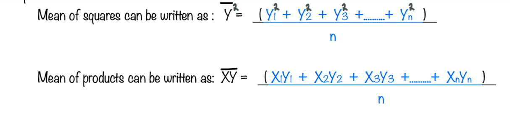
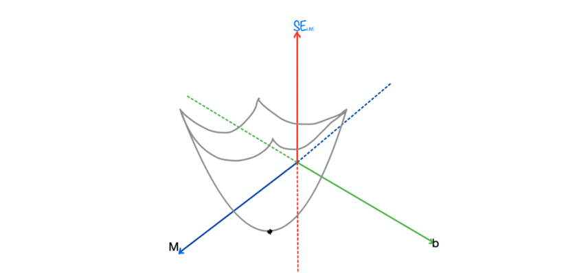

Math behind ordinary least square approximation

In this section we will derive the equations for slope and intercept which are used in ordinary square approximation.
step 1:
Let the data given be : (X1, Y1), (X2,Y2),...(Xn,Yn)
We want to fit a linear line, let that line be: Y = MX + b
step 2:
We want to fit the line in such a way that sum of squared errors should be as low as possible
sum of squared errors could be written as:
SELINE = ( Y1 - (MX1 + b) )² + ( Y2 - (MX2 + b) )² + ......... + ( Yn - (MXn + b) )²
in this equation we have to find M and b that minimises SELINE
step 3:
Expanding above equation
SELINE = ( Y1² + (MX1 + b)² - 2*Y1* (MX1 + b) )
+ ( Y2² + (MX2 + b)² - 2*Y2* (MX2 + b) )
+ ( Y3² + (MX3 + b)² - 2*Y3* (MX3 + b) )
+ .......
+ ( Yn² + (MXn + b)² - 2*Yn* (MXn + b) )
Expanding again
SELINE = ( Y1² + MX1² + b² + 2MX1b - 2Y1MX1 -2Y1b )
+ ( Y2² + MX2² + b² + 2MX2b - 2Y2MX1 -2Y2b)
+ ( Y3² + MX3² + b² + 2MX3b - 2Y3MX1 -2Y3b)
+ .......
+ ( Yn² + MXn² + b² + 2MXnb - 2YnMX1 -2Ynb)
step 4:
Rewriting the above equation
SELINE = ( Y1² + Y2² + Y3² +..........+ Yn² ) + M² ( X1² + X2² + X3² +..........+ Xn² ) + nb²
+ 2Mb (X1 + X2 + X3 +..........+ Xn) - 2M (X1Y1 + X2Y2 + X3Y3 +..........+ XnYn)
- 2b ( Y1 + Y2 + Y3 +..........+ Yn )
step 5:

Hence substituting similar equations on above:
SELINE = nY² + M²nX² + nb² + 2MbnX
- 2MnXY - 2bnY
step 6:
- So now we have simplified the equation which we want to minimise
- If we observe the above equation carefully, for given input and actual all
the parameters are constants except M and b
- So for different M and b we will have different Sum of Squared Errors
- If we do lot of observations on different M and b the graph looks like this:

- From the above graph it is clear that Sum of squared error is minimum where we have marked star
- This coordinate is present at that point where slope with respect M and slope with respect to b is zero.
- Hence, we can use partial derivative to obtain this point
d(SELINE)/dM = 0 d(SELINE)/db = 0
- partial derivatives are used to find the slope and by assigning 0 we will know that at these points
slope is minimum
step 7:
Let's solve for d(SELINE)/dM = 0
d(nY² + M²nX² + nb² + 2MbnX
- 2MnXY - 2bnY) /dM = 0
(2 n X² M) + (2 b n X) - ( 2 n XY ) = 0
Let's solve for d(SELINE)/db = 0
d(nY² + M²nX² + nb² + 2MbnX
- 2MnXY - 2bnY) /db = 0
(2 n b) + (2 M n X) - ( 2 n Y ) = 0
step 8:
We have 2 equations from above. Those are:
(2 n X² M) + (2 b n X) - ( 2 n XY ) = 0
(2 n b) + (2 M n X) - ( 2 n Y ) = 0
Dividing these 2 equations with "2n"
X² M + b X - XY = 0 ................... (eq 1)
b + M X - Y = 0 ................... (eq 2)
step 9:
If we substitute second equation in first we will get:
Note: we can rewrite both of these equations in Y = MX + b format and can say that any regression line that better fits data points should have to go through ( µx , µy )